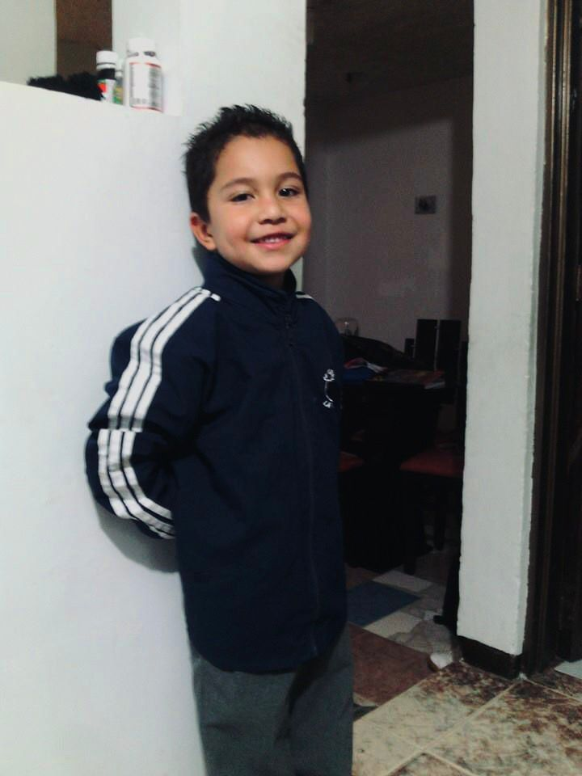

Conociendo más sobre mí

Hola, mi nombre es Stiven. Soy una persona divertida, responsable y bastante canson, me gusta el diseño web y la programación.
Actualmente estudio ADSO y me gusta aprender sobre desarrollo web, diseño, programación y herramientas digitales.
También disfruto montar bicicleta, escuchar música, compartir tiempo con mi familia.
| Dato | Información |
|---|---|
| Nombre | Stiven Gonzalez Arias |
| Edad | 16 años |
| Ciudad | Villamaria |
| Programa | ADSO |
| Hobby | Montar bicicleta y programar |
Convertirme en una gran desarrollador web para tener un mejor futuro.
Soy una persona alegre, creativa y divertida.
Tener mucho éxito y ser profesional